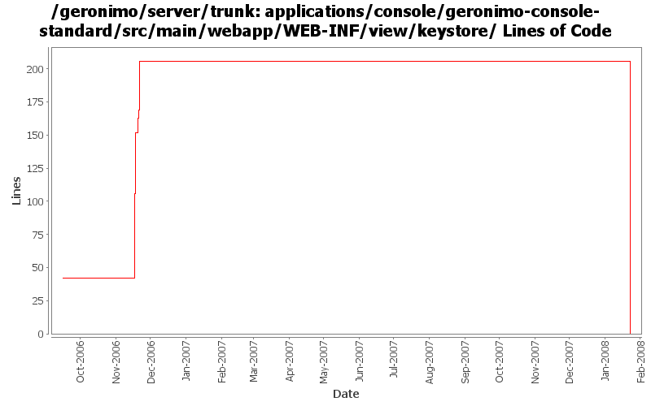

[root]/applications/console/geronimo-console-standard/src/main/webapp/WEB-INF/view/keystore

| Author | Changes | Lines of Code | Lines per Change |
|---|---|---|---|
| Totals | 55 (100.0%) | 220 (100.0%) | 4.0 |
| vamsic007 | 10 (18.2%) | 151 (68.6%) | 15.1 |
| kevan | 20 (36.4%) | 65 (29.5%) | 3.2 |
| jdillon | 17 (30.9%) | 4 (1.8%) | 0.2 |
| gnodet | 4 (7.3%) | 0 (0.0%) | 0.0 |
| gdamour | 4 (7.3%) | 0 (0.0%) | 0.0 |
(GERONIMO-3747) Moved applications/* to plugins/*
0 lines of code changed in 13 files:
Std props
4 lines of code changed in 4 files:
GERONIMO-2533 Password setup forms should use a confirmation field
38 lines of code changed in 2 files:
GERONIMO-2588 KeyStorePortlet: Locking and unlocking could use some error and info messages
6 lines of code changed in 1 file:
GERONIMO-2236 keystore portlet - providing a null or incorrect password on edit unlock can only be recovered with server recycle
11 lines of code changed in 3 files:
GERONIMO-1396 Provide consistent look and feel for table views in the web console across all portlets: Taking care of a few pages missed earlier.
96 lines of code changed in 4 files:
GERONIMO-2537 Integrating yet another patch supplied by Jay McHugh. Thanks Jaysvn status! Adds apache license header to files in applications/
65 lines of code changed in 20 files:
GERONIMO-2504: Allow all read-only operations on KeystoreInstance to be available to services
0 lines of code changed in 4 files:
GERONIMO-2378 Problems in JavaScript validation code forms.js
GERONIMO-2379 Security Realms portlet - form field validation using javascript
GERONIMO-2380 Keystores portlet - Form field validation using javascript
GERONIMO-2382 Webservers portlet - Form field validation using javascript
GERONIMO-2388 JMS Server portlet improvement - field validation, reset button and show current task
All these patches have been provided by Vamsavardhana Reddy. Thanks for that!
0 lines of code changed in 4 files: